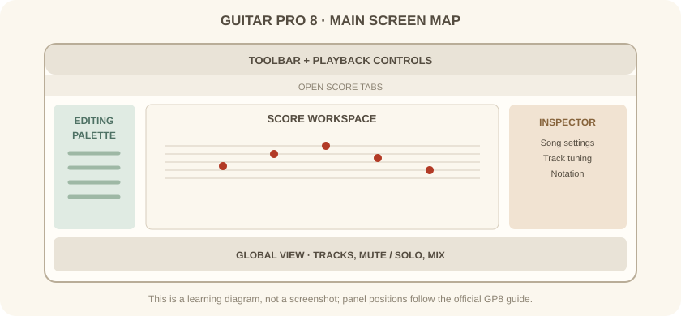
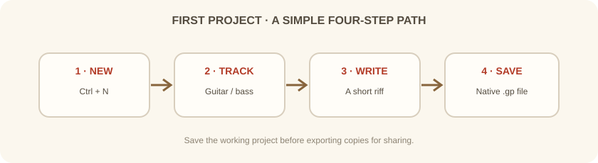

دورهٔ فرعی · Guitar Pro · جلسهٔ اول از شش
در این جلسه با بخشهای اصلی Guitar Pro 8 آشنا میشویم، یک پارتیتور تازه میسازیم و نسخهٔ اصلی پروژه را ذخیره میکنیم.
بخش اول
پنجرهٔ اصلی چند بخش دارد: نوار ابزار و زبانههای فایل در بالا، پالت ویرایش در سمت چپ، فضای پارتیتور در مرکز، بازرس تنظیمات در سمت راست و نمای سراسری قطعه در پایین.
پالت ویرایش برای انتخاب نمادهای نتنویسی و اجرایی است؛ بازرس برای تنظیمات قطعه یا سازِ انتخابشده است؛ نمای سراسری هم مسیرها، صدا، بیصداکردن و پخش تکی هر مسیر را در دسترس میگذارد.

پیش از نوشتن نت، ساز و کوک درست را انتخاب کن. انتخاب اشتباه کوک میتواند جایگاه نت روی دسته و صدای نهایی را عوض کند.
بخش دوم
در Windows از File → New یا میانبر Ctrl+N استفاده کن. در صفحهٔ آغاز هم میتوانی گزینهٔ ساخت فایل تازه یا یک الگو را انتخاب کنی. برای تمرین این دوره، یک پروژهٔ ساده با مسیر گیتار بساز.
بعد از ساخت فایل، پنجرهٔ افزودن ساز را میبینی. اگر هنوز دربارهٔ تنظیم مسیر مطمئن نیستی، از گیتار با کوک استاندارد شروع کن؛ جزئیات تنظیم در جلسهٔ بعد میآید.

بخش سوم
فایل اصلی را با File → Save As در پوشهٔ مشخص ذخیره کن. نامی بگذار که ساز و ایده را روشن کند، مانند practice-riff-01.gp. میانبر ذخیره در Windows برابر Ctrl+S است.
تمرین: یک پروژه بساز، آن را با نام دلخواه ذخیره کن، سپس ببند و دوباره باز کن تا مطمئن شوی فایل درست ذخیره شده است.